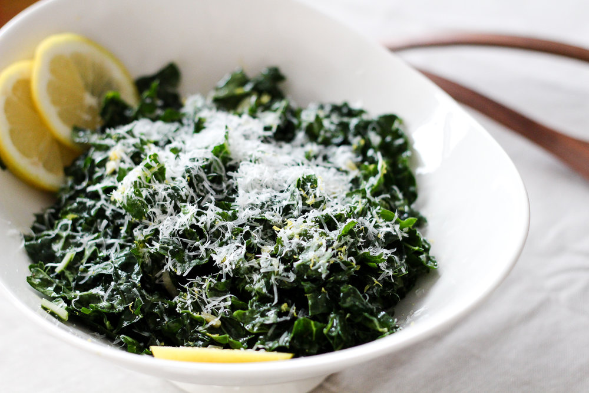

Caprese Salad

The POWERof cheese!
Kale typically is hard to muscle down. With the help of
cheese and few other ingredients... Kale can be a part of
anyone diet.
Ingredients:
- Kale (preferablly dino)
- Lemons
- Parmesan cheese
- Extra Virgin Olive Oil
Steps:
- Shred kale as fine as desired.
- Place in mixing bowl and grate 1 cup of parmasan cheese.
- Mix well.
- Cut lemon in half and squeeze half of lemon on salad.
- Finally, lightly drizzle extra-virgin olive oil and give one last stir.
- Enjoy!
Click here to return to recipes.